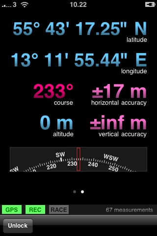
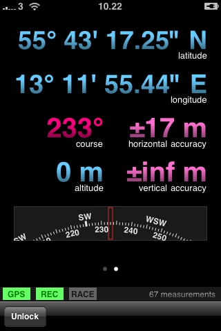

Glint,
Intuitive GPS Tracker
Glint aims to be intuitive to use, keep track of important information and otherwise just stay out of the way. Glint is designed for anyone who walks, jogs, run, cycles, paddles, rows or for any other reason likes to keep track of how far and fast you move. You can also use Glint to just record your hikes, for example to geocode photos afterwards.
Talk To Us
For questions, comments, or suggestions, please don't hesitate to get in touch. Email to glint@nym.se is the best for longer questions, while prodding calmh on Twitter is definately the fastest.
Get Glint
Glint will soon be available for free in the App Store.
Up to date information at a glance
Glint keeps track of your running, bicycling, kayaking and other sports activities. The home screen gives you a clear overview of your current performance, distance traveled, current and average speed, and course.
Compete against yourself
You can race against any previously recorded track. When racing, Glint shows how far ahead of or behind the recorded track you are, in time or distance.
Energy efficient
Glint takes care of turning of the display when the phone is in your pocket, to conserve battery life. If you set the recording interval (time between recorded waypoints) to at least 30 seconds, Glint can let the GPS unit sleep between measurements and updates the home screen statistics only when necessary. Used together, this enables a full day of GPS tracking.
Highly configurable
Speeds and distances are configurable for metric, nautical and imperial units. Required precision and recording interval can be set to a wide range of values.
Tracking and export
While showing current statistics, Glint can record your progress. The recording is exported as a industry-standard GPX (GPS Exchange Format) file and emailed to your account. You can then analyze the track in programs like TrailRunner (Mac) and Google Earth (Mac & Windows).
 

Text and images Copyright © 2009 Jakob Borg